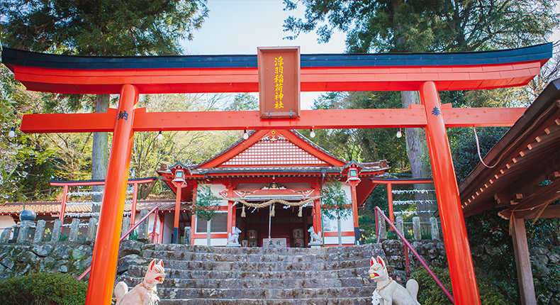

見出し１
ここに本文が入ります。ここに本文が入ります。ここに本文が入ります。ここに本文が入ります。ここに本文が入ります。ここに本文が入ります。ここに本文が入ります。ここに本文が入ります。ここに本文が入ります。ここに本文が入ります。ここに本文が入ります。ここに本文が入ります。ここに本文が入ります
見出し２
ここに本文が入ります。ここに本文が入ります。ここに本文が入ります。ここに本文が入ります。ここに本文が入ります。ここに本文が入ります。ここに本文が入ります。ここに本文が入ります。ここに本文が入ります。ここに本文が入ります。ここに本文が入ります。ここに本文が入ります。ここに本文が入ります
見出し３
ここに本文が入ります。ここに本文が入ります。ここに本文が入ります。ここに本文が入ります。ここに本文が入ります。ここに本文が入ります。ここに本文が入ります。ここに本文が入ります。ここに本文が入ります。ここに本文が入ります。ここに本文が入ります。ここに本文が入ります。ここに本文が入ります
見出し４
ここに本文が入ります。ここに本文が入ります。ここに本文が入ります。ここに本文が入ります。ここに本文が入ります。ここに本文が入ります。ここに本文が入ります。ここに本文が入ります。ここに本文が入ります。ここに本文が入ります。ここに本文が入ります。ここに本文が入ります。ここに本文が入ります